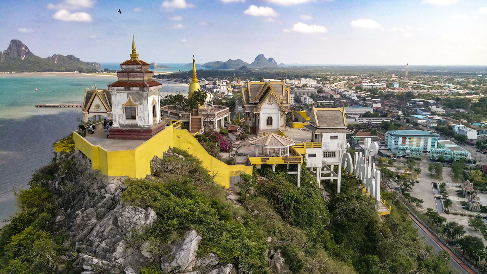

แหล่งท่องเที่ยวแนะนำ
จุดชมวิว

เขาช่องกระจก เป็นสถานที่ท่องเที่ยวสำคัญและเป็นสัญลักษณ์ของเมืองประจวบคีรีขันธ์ ตั้งอยู่บริเวณด้านหลังศาลากลางจังหวัด ในเขตเทศบาลเมืองประจวบคีรีขันธ์
ข้อมูลสำคัญ
- ลักษณะภูมิประเทศ: เป็นภูเขาขนาดย่อม สูงประมาณ 245 เมตรจากระดับน้ำทะเล (หรือประมาณ 94 เมตรจากพื้นราบใกล้ชายฝั่ง)
- ที่มาของชื่อ: บริเวณด้านทิศเหนือของภูเขามีช่องทะลุโปร่ง มองดูคล้ายกับกรอบกระจก
- การเดินทางขึ้นไปด้านบน: ต้องเดินขึ้นบันไดคอนกรีตจำนวน 396 ชั้น
- เวลาเปิดทำการ: เปิดให้เข้าชมทุกวัน เวลา 05.00 - 20.00 น.
สิ่งที่น่าสนใจบนเขาช่องกระจก
- วัดธรรมิการามวรวิหาร: ตั้งอยู่บริเวณเขาช่องกระจก เป็นที่ประดิษฐานรอยพระพุทธบาทจำลองและพระบรมสารีริกธาตุ
- ต้นพระศรีมหาโพธิ์: พระบาทสมเด็จพระบรมชนกาธิเบศร มหาภูมิพลอดุลยเดชมหาราช บรมนาถบพิตร ได้เสร็จฯ มาทรงประกอบพิธีบรรจุพระบรมสารีริกธาตุและทรงปลูกไว้เมื่อวันที่ 12 มิถุนายน 2501 (มีงานฉลองในวันที่ 12 มิถุนายนของทุกปี)
- จุดชมวิว 360 องศา: สามารถมองเห็นทัศนียภาพของตัวเมืองประจวบคีรีขันธ์ และเห็นโค้งอ่าวสำคัญทั้ง 3 อ่าว คือ อ่าวประจวบ อ่าวมะนาว และอ่าวน้อย
- ถ้ำเทวาสถิต & จุดชมพระอาทิตย์ขึ้น: เป็นจุดชมแสงแรกและพระอาทิตย์ขึ้นยามเช้าที่สวยงามโดยพระอาทิตย์จะขึ้นตรงบริเวณช่องเขาพอดี